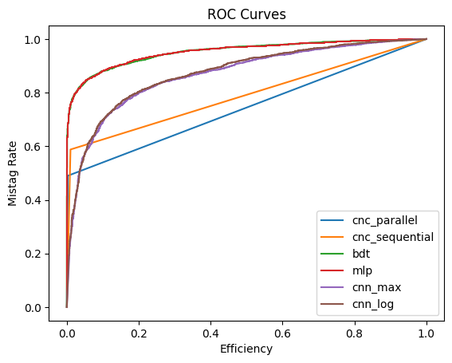

Applying Approaches#
This guide shows how to use the three built-in approaches to differentiate signal and background. HML streamlines the application of different approaches by adapting them in Keras-style (compile, fit, predict), which is simple to use.
Let's get started by importing the necessary modules:
# Dataset
from hml.datasets import load_dataset
from sklearn.model_selection import train_test_split
# Approaches
from hml.approaches import CutAndCount as CBA
from hml.approaches import GradientBoostedDecisionTree as BDT
from hml.approaches import ToyMultilayerPerceptron as MLP
# Evaluation
from keras.metrics import Accuracy, AUC
from sklearn.metrics import roc_curve
from hml.metrics import MaxSignificance, RejectionAtEfficiency
from collections import defaultdict
from tabulate import tabulate
import matplotlib.pyplot as plt
import numpy as np
# Save and load
from hml.approaches import load_approach
Loading the Dataset#
load_dataset works similarly to get_observable — users do not need to know the specific class name for that dataset to use it:
To split the whole dataset, use its properties samples and targets:
x_train, x_test, y_train, y_test = train_test_split(
dataset.samples, dataset.targets, test_size=0.3, random_state=42
)
x_train, x_val, y_train, y_val = train_test_split(
x_train, y_train, test_size=0.2, random_state=42
)
Cut and Count Approach#
The cut-based analysis or cut and count approach is one of fundamental approaches widely used in HEP phenomenology . We implement it in Keras framework:
approach1 = CBA()
approach1.compile(
optimizer="adam",
loss="sparse_categorical_crossentropy",
metrics=["accuracy"],
)
history = approach1.fit(
x_train,
y_train,
batch_size=len(x_train),
validation_data=(x_val, y_val),
)
- The
optimizerincompilehas no effect for CutAndCount because there are no learnable parameters. - The
batch_sizeis preferably the whole training set to show the complete distributions of observables. Theepochshas no effect.
Boosted Decision Tree#
We adapt GradientBoostingClassifier from sklearn to work as a Keras model:
approach2 = BDT()
approach2.compile(
metrics=["accuracy"],
)
history = approach2.fit(
x_train,
y_train,
validation_data=(x_val, y_val),
)
- The
optimizerandlosshave any effect incompilebecausesklearnwill handle them internally. batch_sizeandepochsare irrelevant for a tree.- The progress bar displays the number of estimators rather than training steps.
Networks#
Currently, HML provides a toy multi-layer perceptron to perform simple analysis:
approach3 = MLP()
approach3.compile(
loss="sparse_categorical_crossentropy",
metrics=["accuracy"],
)
approach3.fit(
x_train,
y_train,
batch_size=128,
epochs=20,
validation_data=(x_val, y_val),
)
Epoch 1/20
8/8 [==============================] - 1s 34ms/step - loss: 13.7174 - accuracy: 0.5575 - val_loss: 10.6973 - val_accuracy: 0.5841
Epoch 2/20
8/8 [==============================] - 0s 19ms/step - loss: 10.3071 - accuracy: 0.5575 - val_loss: 8.0258 - val_accuracy: 0.5841
Epoch 3/20
8/8 [==============================] - 0s 19ms/step - loss: 7.5906 - accuracy: 0.5575 - val_loss: 5.7093 - val_accuracy: 0.5841
Epoch 4/20
8/8 [==============================] - 0s 21ms/step - loss: 5.1318 - accuracy: 0.5575 - val_loss: 3.5278 - val_accuracy: 0.5841
Epoch 5/20
8/8 [==============================] - 0s 19ms/step - loss: 2.8022 - accuracy: 0.5575 - val_loss: 1.2921 - val_accuracy: 0.5841
Epoch 6/20
8/8 [==============================] - 0s 22ms/step - loss: 0.8136 - accuracy: 0.6217 - val_loss: 0.5321 - val_accuracy: 0.8540
Epoch 7/20
8/8 [==============================] - 0s 19ms/step - loss: 0.4860 - accuracy: 0.8662 - val_loss: 0.5465 - val_accuracy: 0.7611
Epoch 8/20
8/8 [==============================] - 0s 20ms/step - loss: 0.4802 - accuracy: 0.8496 - val_loss: 0.5843 - val_accuracy: 0.7257
Epoch 9/20
8/8 [==============================] - 0s 19ms/step - loss: 0.4749 - accuracy: 0.8473 - val_loss: 0.6016 - val_accuracy: 0.6372
Epoch 10/20
8/8 [==============================] - 0s 22ms/step - loss: 0.4863 - accuracy: 0.8341 - val_loss: 0.5898 - val_accuracy: 0.7168
Epoch 11/20
8/8 [==============================] - 0s 19ms/step - loss: 0.4621 - accuracy: 0.8451 - val_loss: 0.5200 - val_accuracy: 0.7080
Epoch 12/20
8/8 [==============================] - 0s 19ms/step - loss: 0.4600 - accuracy: 0.8507 - val_loss: 0.6299 - val_accuracy: 0.7080
Epoch 13/20
8/8 [==============================] - 0s 20ms/step - loss: 0.4609 - accuracy: 0.8451 - val_loss: 0.5236 - val_accuracy: 0.7965
Epoch 14/20
8/8 [==============================] - 0s 22ms/step - loss: 0.4423 - accuracy: 0.8540 - val_loss: 0.5849 - val_accuracy: 0.7389
Epoch 15/20
8/8 [==============================] - 0s 20ms/step - loss: 0.4510 - accuracy: 0.8485 - val_loss: 0.4898 - val_accuracy: 0.8407
Epoch 16/20
8/8 [==============================] - 0s 20ms/step - loss: 0.4401 - accuracy: 0.8584 - val_loss: 0.4997 - val_accuracy: 0.8186
Epoch 17/20
8/8 [==============================] - 0s 20ms/step - loss: 0.4364 - accuracy: 0.8529 - val_loss: 0.5946 - val_accuracy: 0.7389
Epoch 18/20
8/8 [==============================] - 0s 20ms/step - loss: 0.4432 - accuracy: 0.8429 - val_loss: 0.4955 - val_accuracy: 0.8186
Epoch 19/20
8/8 [==============================] - 0s 20ms/step - loss: 0.4246 - accuracy: 0.8518 - val_loss: 0.4807 - val_accuracy: 0.8496
Epoch 20/20
8/8 [==============================] - 0s 19ms/step - loss: 0.4228 - accuracy: 0.8418 - val_loss: 0.6476 - val_accuracy: 0.6283
Evaluation#
To benchmark these approaches, we use:
AccuracyandAucto show overall performance;roc_curveto display tradeoff between thresholds and performance;MaxSignificanceandRejectionAtEfficiency, crucial ones in phenomenology studies.
benchmark = defaultdict(list)
for approach in [approach1, approach2, approach3]:
y_prob = approach.predict(x_test, verbose=0)
y_pred = y_prob.argmax(axis=1)
benchmark["Name"].append(approach.name)
benchmark["ACC"].append(Accuracy()(y_test, y_pred).numpy())
benchmark["AUC"].append(AUC()(y_test, y_prob[:, 1]).numpy())
benchmark["MaxSignificance"].append(MaxSignificance()(y_test, y_prob[:, 1]).numpy())
benchmark["RejectionAtEfficiency"].append(RejectionAtEfficiency(0.5)(y_test, y_prob[:, 1]).numpy())
fpr, tpr, _ = roc_curve(y_test, y_prob[:, 1])
plt.plot(fpr, tpr, label=f"{approach.name}")
print(tabulate(benchmark, headers="keys", tablefmt="github"))
plt.title("ROC Curves")
plt.xlabel("Efficiency")
plt.ylabel("Mistag Rate")
plt.legend()
plt.show()
| Name | ACC | AUC | MaxSignificance | RejectionAtEfficiency |
|---|---|---|---|---|
| cut_and_count | 0.729897 | 0.721404 | 10.1985 | 1 |
| gradient_boosted_decision_tree | 0.876289 | 0.93703 | 13.3053 | 125 |
| toy_multilayer_perceptron | 0.610309 | 0.915157 | 6.78387 | 249.999 |

Show Information#
To clear show information of different Keras-based approaches, we use summary:
Model: "cut_and_count"
_________________________________________________________________
Layer (type) Output Shape Param #
=================================================================
=================================================================
Total params: 10 (40.00 Byte)
Trainable params: 0 (0.00 Byte)
Non-trainable params: 10 (40.00 Byte)
_________________________________________________________________
n_bins: 50
cuts:
#1: x >= 78.3743
#2: x <= 0.5286
#3: x <= 2.7339
Model: "gradient_boosted_decision_tree"
- ccp_alpha: 0
- criterion: friedman_mse
- init: None
- learning_rate: 0.1
- loss: log_loss
- max_depth: 3
- max_features: None
- max_leaf_nodes: None
- min_impurity_decrease: 0
- min_samples_leaf: 1
- min_samples_split: 2
- min_weight_fraction_leaf: 0
- n_estimators: 100
- n_iter_no_change: None
- name: gradient_boosted_decision_tree
- random_state: None
- subsample: 1
- tol: 0.0001
- validation_fraction: 0.1
- verbose: 0
- warm_start: False
Model: "toy_multilayer_perceptron"
_________________________________________________________________
Layer (type) Output Shape Param #
=================================================================
dense (Dense) multiple 40
dense_1 (Dense) multiple 110
dense_2 (Dense) multiple 22
=================================================================
Total params: 172 (688.00 Byte)
Trainable params: 172 (688.00 Byte)
Non-trainable params: 0 (0.00 Byte)
_________________________________________________________________
Let’s plot the cuts on distributions to show if it’s fair enough:
fig, axs = plt.subplots(1, 3, figsize=(15, 5))
for index in range(x_train.shape[1]):
case = approach1.cases[index]
cuts = approach1.cuts[index]
observable = dataset.feature_names[index]
bin_edges = np.linspace(x_train[:, index].min(), x_train[:, index].max(), approach1.n_bins+1)
axs[index].hist(x_test[:, index][y_test == 0], bins=bin_edges, alpha=0.5, label="0")
axs[index].hist(x_test[:, index][y_test == 1], bins=bin_edges, alpha=0.5, label="1")
y_min, y_max = axs[index].get_ylim()
axs[index].vlines(bin_edges, y_min, y_max, color="k", ls="dashed", lw=0.5, label="bin edges")
if case == 0:
axs[index].vlines(cuts[0], y_min, y_max, color="r", label=f"{observable} <= {cuts[0]:.2f}")
elif case == 1:
axs[index].vlines(cuts[0], y_min, y_max, color="r", label=f"{observable} >= {cuts[0]:.2f}")
elif case == 2:
axs[index].vlines(cuts[0], y_min, y_max, color="r", label=f"{cuts[0]:.2f} <= {observable} <= {cuts[1]:.2f}")
axs[index].vlines(cuts[1], y_min, y_max, color="r")
else:
axs[index].vlines(cuts[0], y_min, y_max, color="r", label=f"{observable} <= {cuts[0]:.2f} or {observable} >= {cuts[1]:.2f}")
axs[index].vlines(cuts[1], y_min, y_max, color="r")
axs[index].set_title(f"{observable}")
axs[index].legend()
plt.tight_layout()
plt.show()
Save and load approaches#
After fit each approach, use save to save it to a file. To make folder structure clean, let’s create a folder named “checkpoints†first:
Then, in your codes or the notebook:
approach1.save("./checkpoints/CBA.keras")
approach2.save("./checkpoints/BDT.pickle")
approach3.save("./checkpoints/MLP.keras")
Once again, we use load_approach to let HML decide which class it actually is, just like get_observable, load_dataset:
loaded_approach1 = load_approach("./checkpoints/CBA.keras")
loaded_approach2 = load_approach("./checkpoints/BDT.pickle")
loaded_approach3 = load_approach("./checkpoints/MLP.keras")
assert (approach1.cuts.numpy() == loaded_approach1.cuts.numpy()).all()
assert approach2.n_estimators_ == loaded_approach2.n_estimators_
assert approach3.count_params() == loaded_approach3.count_params()
Check the doc to learn more about cuts, trees, and networks.